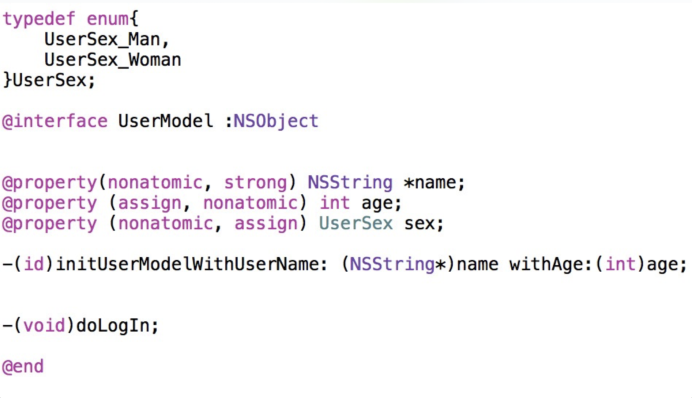
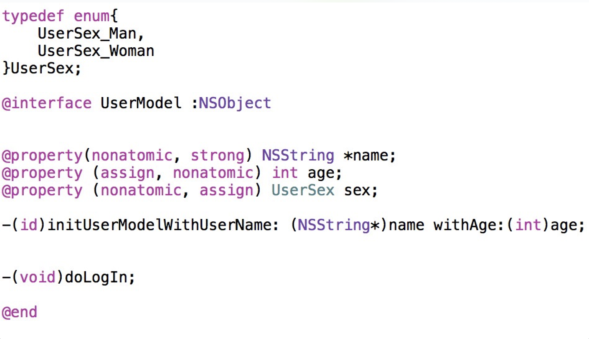

本文的灵感来自于一次代码风格纠错
偶然间看到这篇blog（招聘一个靠谱的 iOS），好奇就做了一下其中的题目，没想到越写越多，那么就试着把这个过程整理出来，下面就是在实践过程中编写的代码。经过简单的注释，希望大家可以看懂~

主要结论
苹果没有提供对对象中所有属性进行完全深拷贝的方式，需要自己编写
测试代码
测试代码主要实践了各种拷贝方式的递归拷贝程度，并且对某些基础概念做了解释
1 | // |
偶然间看到这篇blog（招聘一个靠谱的 iOS），好奇就做了一下其中的题目，没想到越写越多，那么就试着把这个过程整理出来，下面就是在实践过程中编写的代码。经过简单的注释，希望大家可以看懂~

苹果没有提供对对象中所有属性进行完全深拷贝的方式，需要自己编写
测试代码主要实践了各种拷贝方式的递归拷贝程度，并且对某些基础概念做了解释
1 | // |